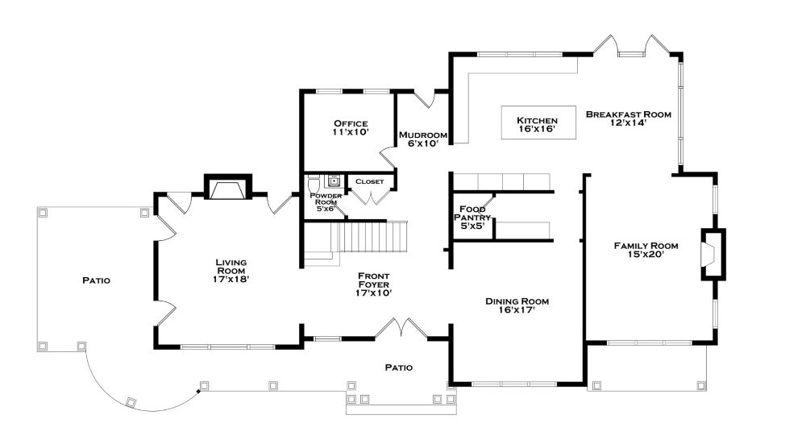
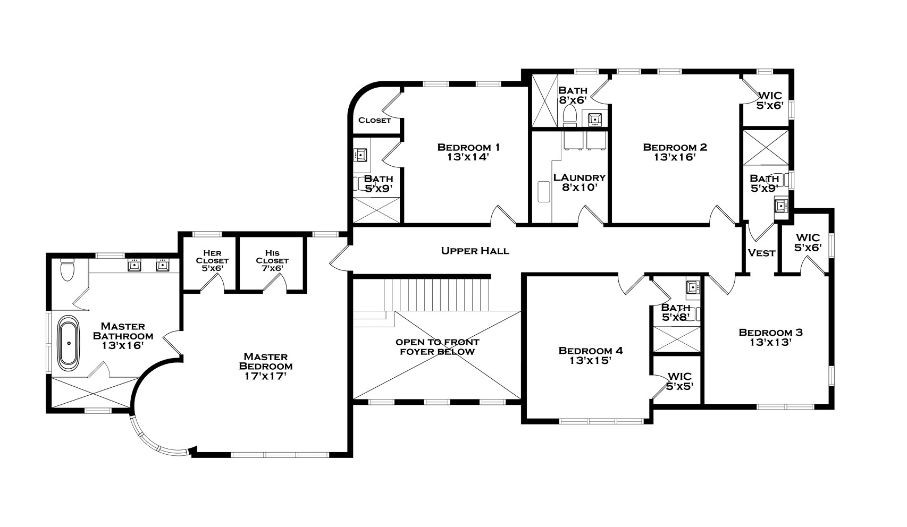
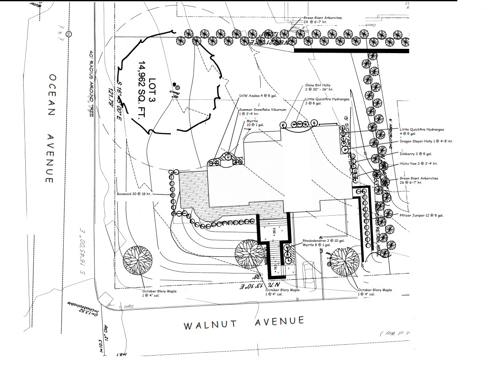

Coastal Materials
Cedar shingle and stone create a timeless Sound Shore profile.
Architecture & Interiors
A gracious flow, elegant proportions, and a seamless indoor-outdoor experience—crafted for the Sound Shore.
A stately entry foyer anchors the home with beautifully proportioned formal living and dining rooms—ideal for both everyday comfort and elevated entertaining. A private office offers flexible work-from-home living, while a thoughtfully planned mudroom provides day-to-day ease.
At the heart of the residence, the chef’s kitchen offers generous workspace, a dedicated pantry, and a sun-filled breakfast room opening to an expansive family room with fireplace and direct access to outdoor patios and covered porches.


The primary suite is envisioned as a private retreat with spa-inspired bath and dual walk-in closets. Four additional bedrooms are each designed with ensuite baths, offering comfort and privacy for family and guests. An open upper hall overlooking the foyer enhances architectural flow and natural light.
Notable Thoughtful separation of spaces creates a quiet, elevated daily experience.
Inquire privately →Cedar shingle siding, stone accents, and covered porches—an estate presence worthy of the Manor.
Cedar shingle and stone create a timeless Sound Shore profile.

Secure ownership ahead of completion and final-market competition.

Outdoor living areas designed to complement the home’s scale and style.